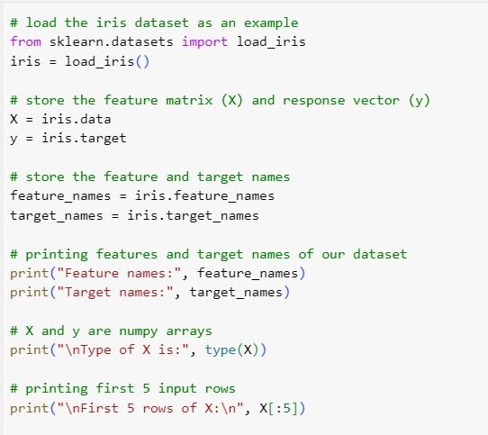
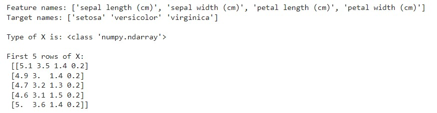
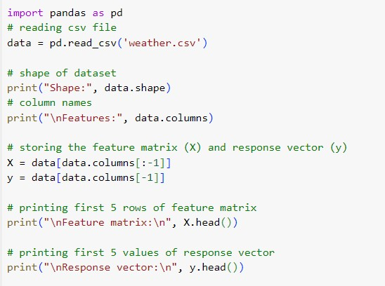
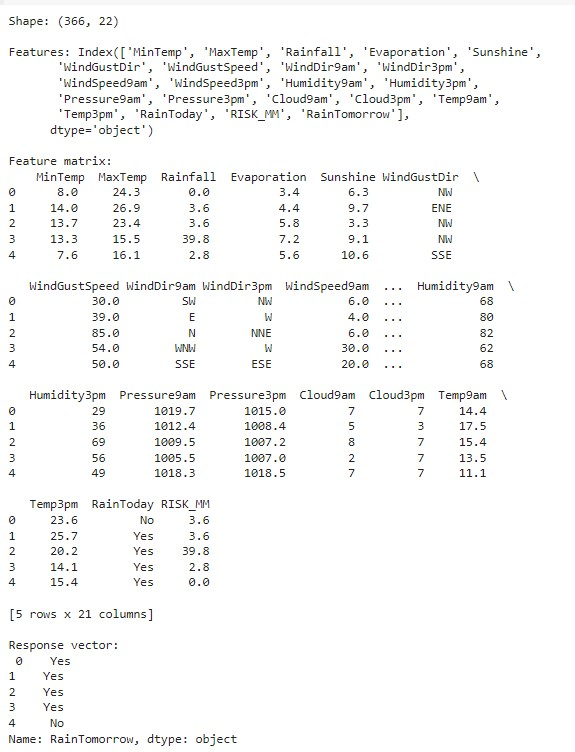
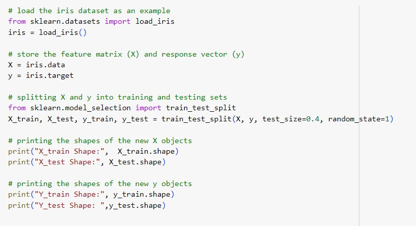
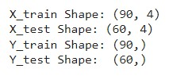
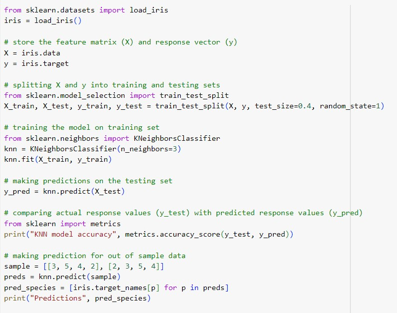
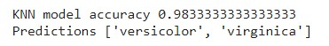

Scikit-learn is an open-source Python library that implements a range of machine learning, pre-processing, cross-validation, and visualization algorithms using a unified interface. It is an open-source machine-learning library that provides a plethora of tools for various machine-learning tasks such as Classification, Regression, Clustering, and many more.
Scikit-learn requires:
• NumPy
• SciPy as its dependencies
Step 1: Load a Dataset
A dataset is nothing but a collection of data. A dataset generally has two main components:
• Features: (also known as predictors, inputs, or attributes) they are simply the variables of our data. They can be more than one and hence represented by a feature matrix (‘X’ is a common notation to represent feature matrix). A list of all the feature names is termed feature names.
• Response: (also known as the target, label, or output) This is the output variable depending on the feature variables. We generally have a single response column and it is represented by a response vector (‘y’ is a common notation to represent response vector). All the possible values taken by a response vector are termed target names.
• Loading exemplar dataset: scikit-learn comes loaded with a few example datasets like the iris and digits datasets for classification and the boston house prices dataset for regression.
Given below is an example of how one can load an exemplar dataset:
Code

Result

Loading external dataset: Now, consider the case when we want to load an external dataset. For this purpose, we can use the pandas library for easily loading and manipulating datasets.
In pandas, important data types are:
• Series: Series is a one-dimensional labeled array capable of holding any data type.
• DataFramet: is a 2-dimensional labeled data structure with columns of potentially different types.You can think of it like a spreadsheet or SQL table, or a dict of Series objects. It is generally the most commonly used pandas object.
Code

Result

Step 2: Splitting the Dataset
One important aspect of all machine learning models is to determine their accuracy. Now, to determine their accuracy, one can train the model using the given dataset and then predict the response values for the same dataset using that model and hence, find the accuracy of the model.
But this method has several flaws in it, like:
• The goal is to estimate the likely performance of a model on out-of-sample data.
• Maximizing training accuracy rewards overly complex models that won’t necessarily generalize our model.
• Unnecessarily complex models may over-fit the training data.
A better option is to split our data into two parts: the first one for training our machine learning model, and the second one for testing our model.
To summarize:
• Split the dataset into two pieces: a training set and a testing set.
• Train the model on the training set.
• Test the model on the testing set and evaluate how well our model did.
Advantages of train/test split
• The model can be trained and tested on different data than the one used for training.
• Response values are known for the test dataset; hence predictions can be evaluated.
• Testing accuracy is a better estimate than training accuracy of out-of-sample performance.
Code

Result

The train_test_split function takes several arguments which are explained below:
• X, y: These are the feature matrix and response vector which need to be split.
• Test_size: It is the ratio of test data to the given data. For example, setting test_size = 0.4 for 150 rows of X produces test data of 150 x 0.4 = 60 rows.
• Random_state: If you use random_state = some_number, then you can guarantee that your split will be always the same. This is useful if you want reproducible results, for example in testing for consistency in the documentation (so that everybody can see the same numbers).
Step 3: Training the Model
Now, it’s time to train some prediction models using our dataset. Scikit-learn provides a wide range of machine learning algorithms that have a unified/consistent interface for fitting, predicting accuracy, etc.
The example given below uses KNN (K nearest neighbors) classifier.
Note: We will not go into the details of how the algorithm works as we are interested in understanding its implementation only.
Now, consider the example below:
Code

Result

Features of Scikit-learn
• Simple and efficient tools for data mining and data analysis. It features various classification, regression, and clustering algorithms including support vector machines, random forests, gradient boosting, k-means, etc.
• Accessible to everybody and reusable in various contexts.
• Built on the top of NumPy, SciPy, and matplotlib.
• Open source, commercially usable – BSD license.
Benefits of using Scikit-learn Libraries
• Consistent interface to machine learning models
• Provides many tuning parameters but with sensible defaults.
• Exceptional documentation